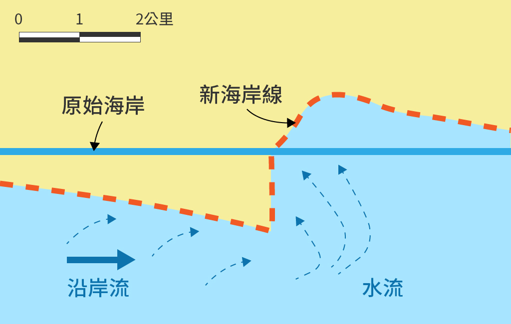
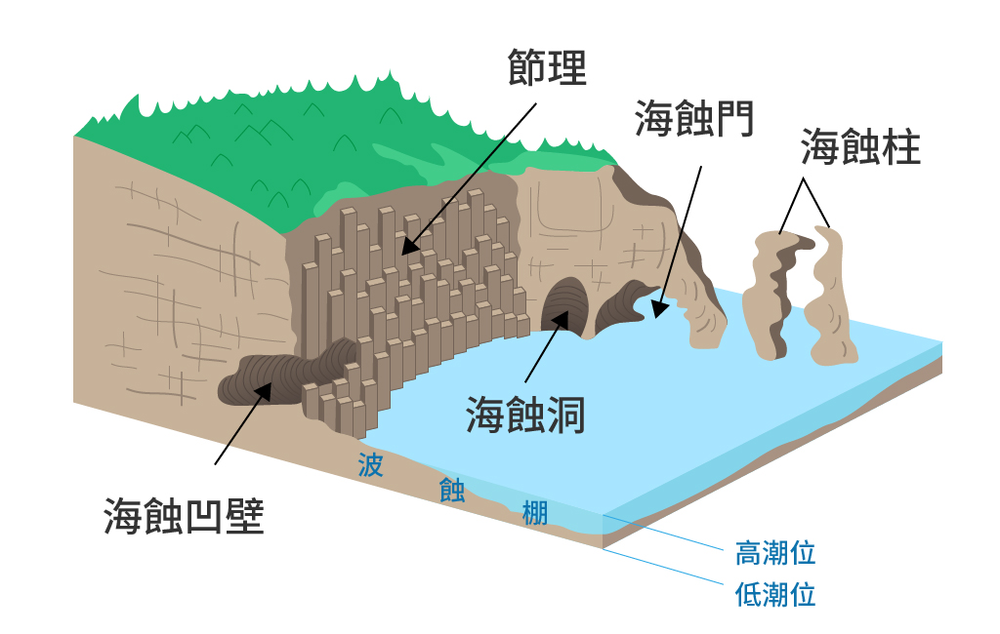

為海水對於海岸線陸地的侵蝕，所形成的一種作用。
一般的海蝕通常伴隨著潮汐，週期性的潮汐引起海水向陸地水平流動，進而對陸地的邊緣產生侵蝕作用，而其中又以波浪的侵蝕力最大，前衝的波浪進入陸地，而後退的波浪挾帶砂礫磨蝕海岸。

通常海蝕發生在岩岸地形較多，海岸的岩壁受到海水作用，外側的岩體被海浪切斷，進而剝落而形成。海蝕侵襲的海岸通常會形成一種特有的海岸線地形，一般常見的如：海崖、海蝕凹璧、波蝕棚、海蝕洞、海蝕門、海蝕柱、海蝕平臺，如遇地形抬升還會形成海階等海岸地形。